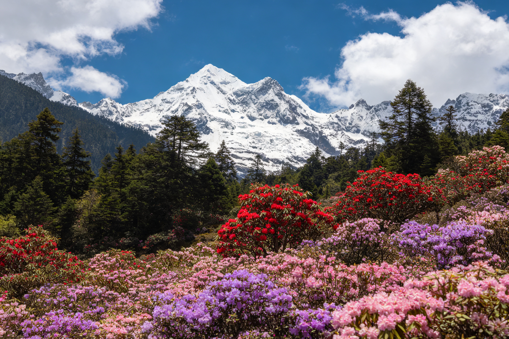
春约 3 月 – 5 月 · 雪峰花海
杜鹃花开，雪峰仍白
★★★★★
3–4 月山里仍冷、雪峰积雪厚重，5 月气温回暖，高山杜鹃从普达措一路开到雨崩，普达措花海峰值约在 5 月下旬至 6 月上旬，粉紫花毯配洁白雪山，层次极强。旱季尚未结束，晴天与日照金山概率仍较高，游客比国庆少得多。
优势
- 5 月杜鹃花海限定
- 金山概率仍较高
- 气温舒适、人不算多
留意
- 3–4 月早晚仍严寒
- 6 月起雨水渐多
- 春季高原风较大
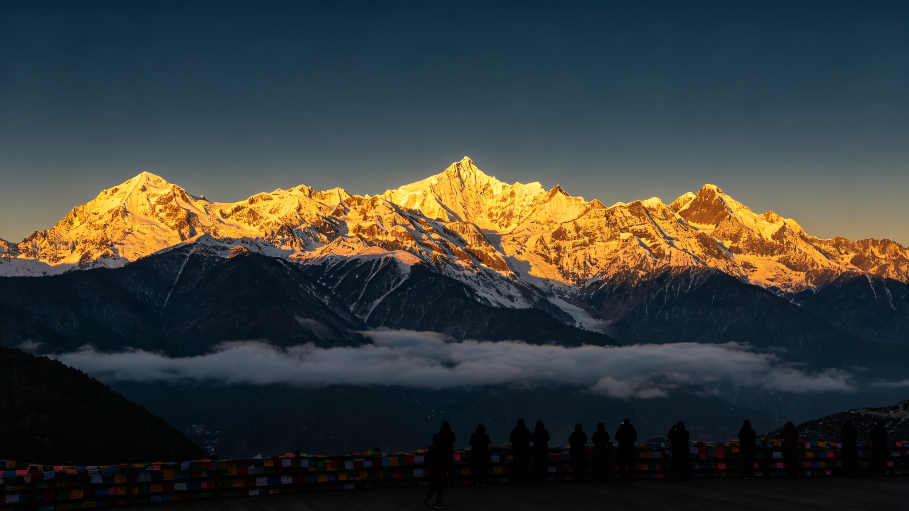
这条线位于云南省迪庆藏族自治州，起点是州府所在地香格里拉（原名中甸，海拔约 3300 米），终点是德钦县梅里雪山脚下的雨崩村，全程约 180 公里公路加两天徒步，海拔从 2000 米的干热河谷一路抬升到近 3900 米的冰湖。
梅里雪山是横断山脉的主体之一，主峰卡瓦格博海拔 6740 米，为云南第一高峰，位列藏区八大神山之首，也是至今无人登顶的神山——1991 年山难后，当地立法禁止攀登。清晨阳光率先点亮十三座雪峰，「日照金山」是无数人专程守候的画面，飞来寺观景台正是直面群峰的 C 位。
雨崩深藏在卡瓦格博与神女峰缅茨姆之间的冰川谷地中，分上村（约 3150 米）、下村（约 3050 米），长期只有驿道与外界相通，如今仍需换乘越野车或徒步翻越南宗垭口才能进入。雪山、冰川、彩林、牧场与藏式木屋同框，被称作「徒步者的天堂」。
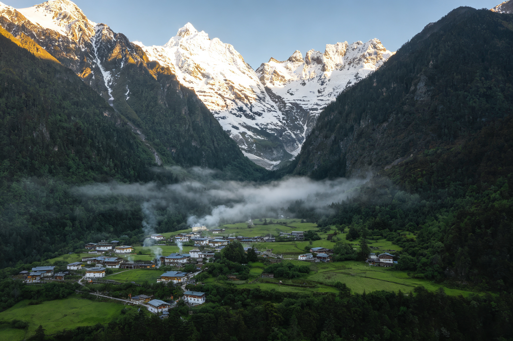
独克宗古城、松赞林寺、普达措、纳帕海，先在藏地慢生活中适应海拔
金沙江月亮湾、雾浓顶十三白塔、飞来寺日照金山、明永冰川
神瀑线、冰湖线、笑农大本营、尼农峡谷，雪山冰川触手可及
整条线是一条「先缓后陡」的海拔适应曲线：在香格里拉停留 2–3 天看寺院与湖泊，再翻山到飞来寺守候日照金山，最后进村用两天时间徒步神瀑与冰湖。
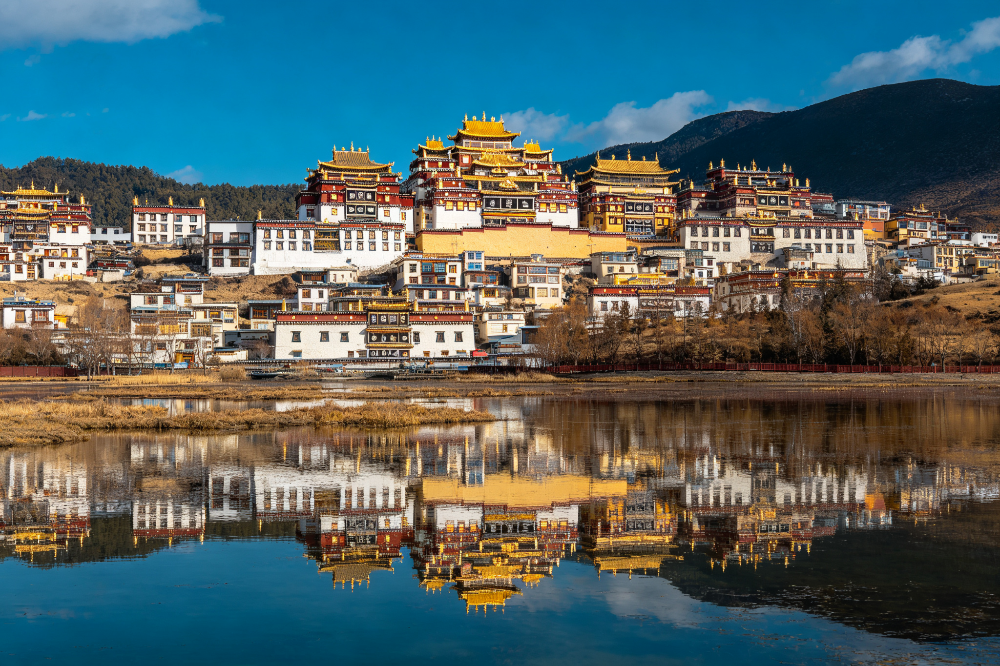
前段 · 香格里拉人文湖泊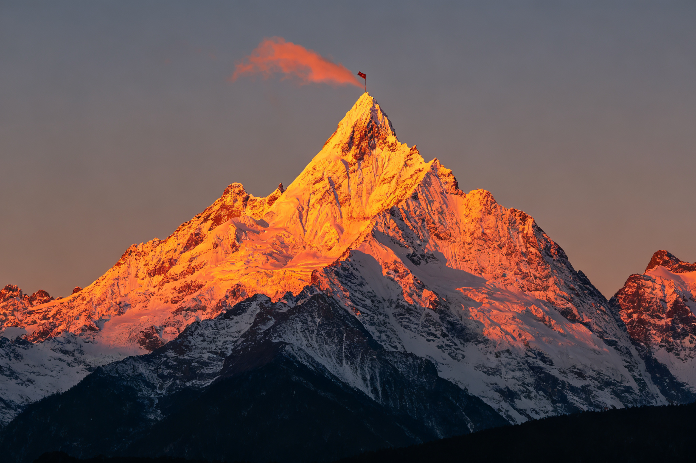
后段 · 梅里雪山与雨崩入住古城后只做轻活动：傍晚登龟山公园，和藏民一起转动世界最大的巨型转经筒，看古城灯火。当天不饮酒、不剧烈运动、谨慎洗头洗澡，让身体适应 3300 米海拔。
清晨趁光线与团队未到先访松赞林寺，看金顶与拉姆央措倒影；下午租电瓶车或包车环纳帕海，顺时针下午顺光，草甸、水洼、牦牛与远山一路出片。
乘景区观光车进入，沿属都湖木栈道慢行，看碧蓝湖水、原始森林与高山牧场；景区海拔约 3500–3700 米，走累随时乘车。晚上早睡，为次日进山养精蓄锐。
沿 G214 西行约 4 小时：先俯瞰金沙江 Ω 形月亮湾，再经白马雪山垭口，到雾浓顶迎宾台与十三白塔、梅里十三峰合影。傍晚抵达飞来寺入住，务必住飞来寺而非德钦县城，方便次日看日出。
日出前约 40 分钟到飞来寺观景台，看金光逐一点亮卡瓦格博与缅茨姆。早餐后出发到西当温泉停车场（私家车统一停放），换乘越野车约 40 分钟翻越南宗垭口进村，或徒步约 12 公里、爬升约 1000 米进村。宿上雨崩，下午只在村边轻走适应。
新手走下雨崩→原始森林→经幡通道→神瀑，往返约 12 公里、4–6 小时，可顺时针绕瀑祈福；进阶者走上雨崩→笑农大本营→冰湖，往返约 14–16 公里、7–10 小时，直抵冰川脚下的翡翠冰湖。两条都走需在雨崩多住一晚。
沿尼农峡谷悬崖栈道一路下行约 13 公里到尼农村接駁，碧绿江水相伴，约 4–5 小时；也可乘越野车原路返回西当。之后回到德钦或香格里拉，衔接当晚或次日交通。
时间紧怎么压缩：只走一条徒步线、普达措与纳帕海二选一，可压成 6 天 5 晚；从丽江起止、只看飞来寺金山 + 雨崩一条线，5 天也能完成但较赶。神瀑、冰湖都想走，则需在雨崩住 3 晚、全程 8 天 7 晚。雨季（尤其 7–8 月）不建议走尼农线，防落石塌方，出山改乘越野车。
这条线最不缺的就是层次：金顶红墙的寺院、晨雾里的湖泊、Ω 形的大江拐弯、排列成阵的白塔、穿过森林的低海拔冰川——下面八处，是沿途最值得停留的画面。
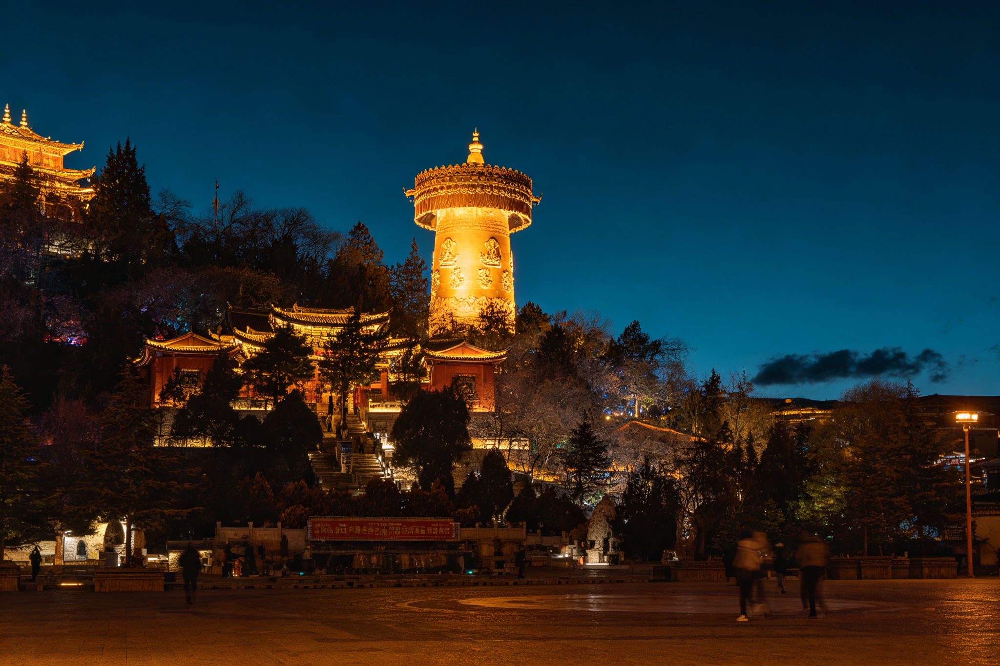
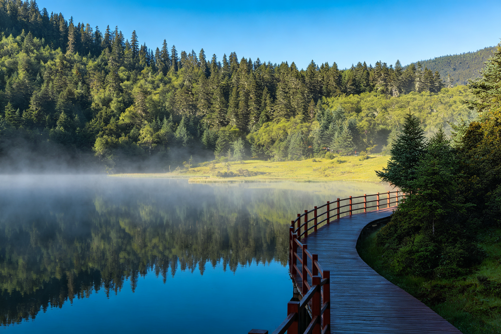
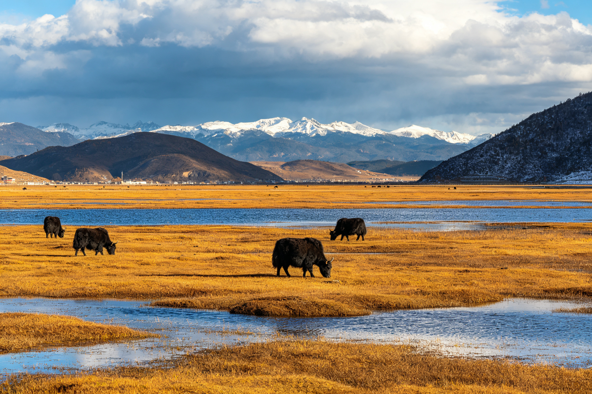
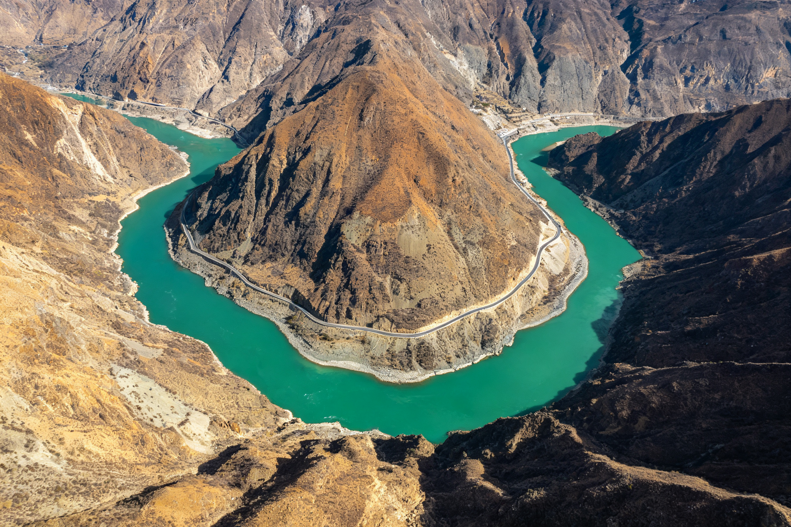
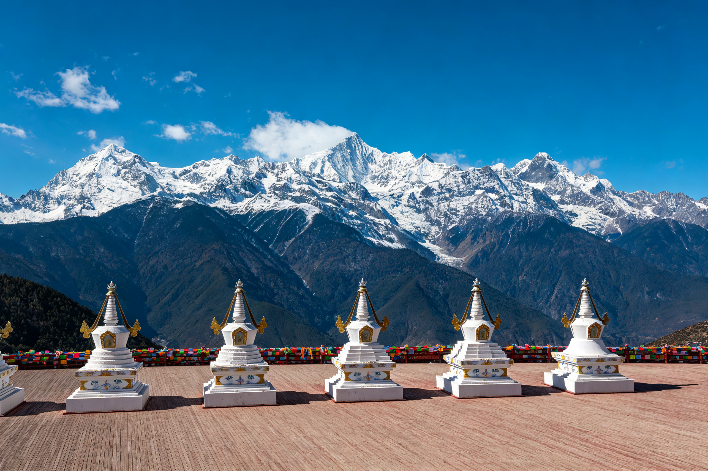
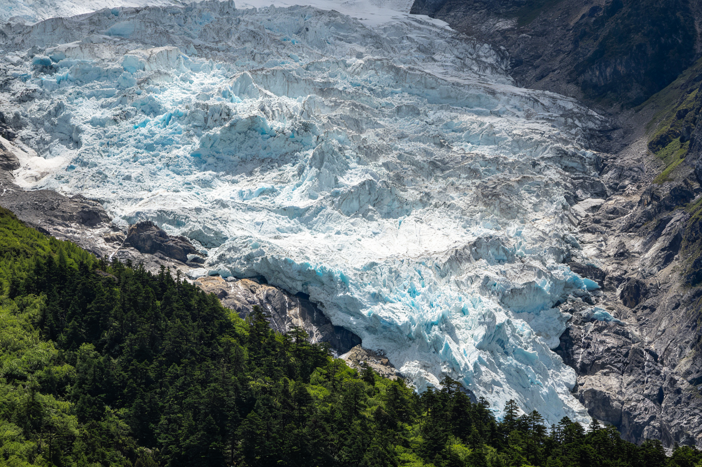
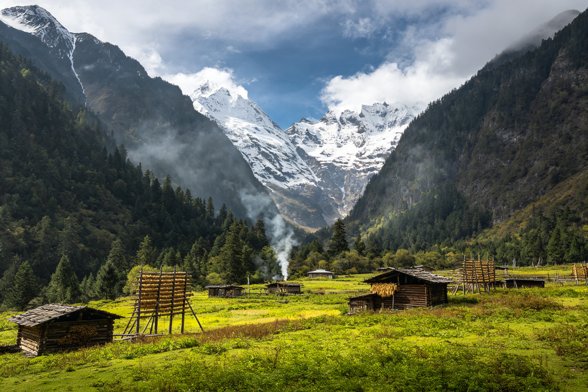
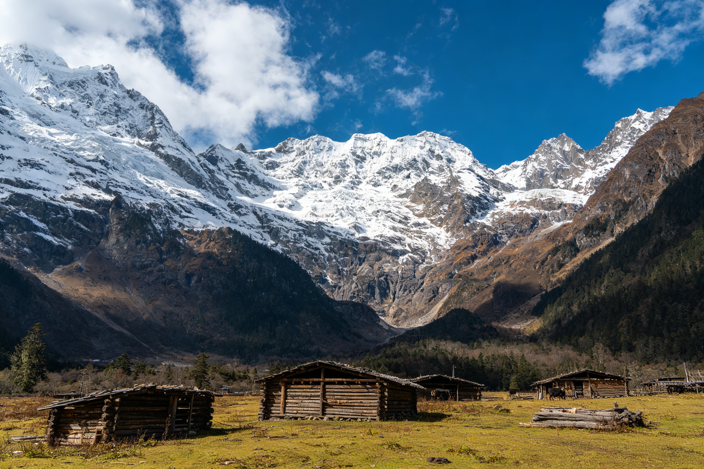
雨崩的精华全在两条腿上：神瀑线平缓、台阶为主，是藏民内转朝圣之路；冰湖线更长更陡，直抵卡瓦格博冰川脚下。门票约 55 元、3 日内有效，神瀑与冰湖均不二次收费。
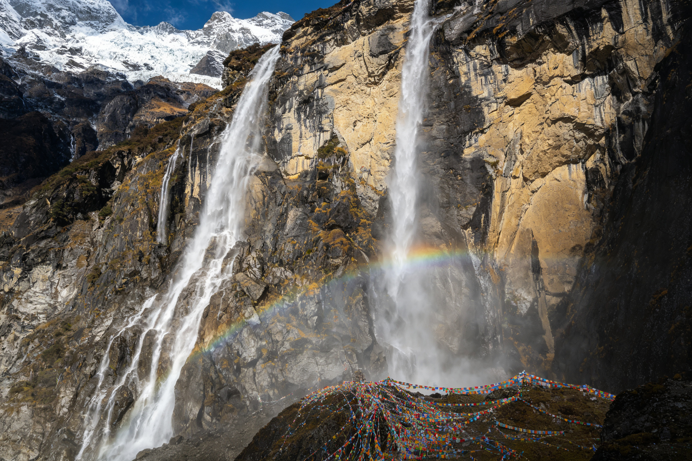
神瀑线 · 新手友好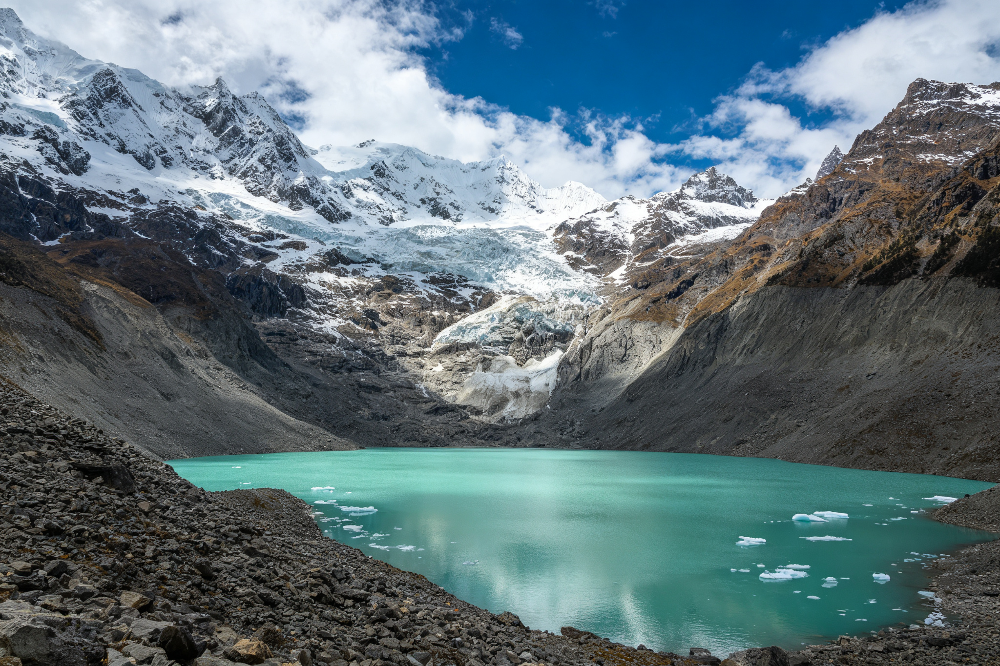
冰湖线 · 进阶挑战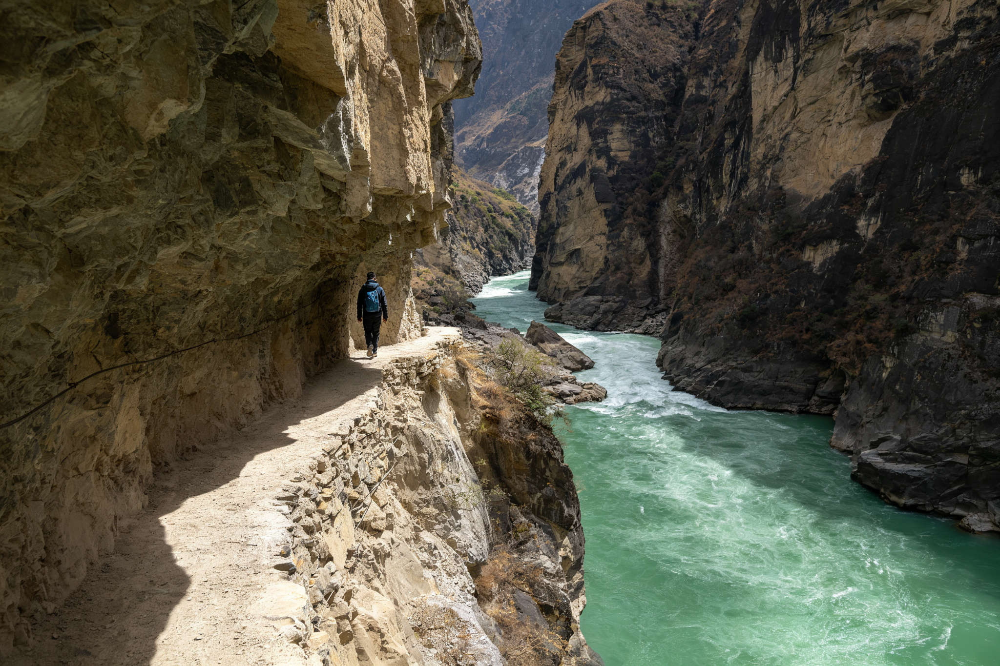
① 越野车进村（省力）：私家车统一停西当温泉停车场，换乘当地越野车翻越南宗垭口，到上雨崩约 200 元 / 人、下雨崩约 260 元 / 人，车程约 40 分钟（价格以现场为准）。
② 徒步南宗垭口进村（经典）：西当→南宗垭口→雨崩，约 12 公里、累计爬升约 1000 米，5–6 小时，上坡路考验体力。
③ 尼农峡谷出村：雨崩→尼农村约 13 公里下坡栈道，4–5 小时，悬崖与碧绿江水相伴，省体力又出片。
梅里地处横断山区，旱雨季分明：旱季（10 月–次年 5 月）天高云淡、雪峰尽露；雨季（6–9 月）云雾紧锁、十天里九天看不到主峰。与此同时，春天有杜鹃、夏天有绿野、秋天有彩林、冬天有雪域，四季的雨崩几乎是四个世界。

春3–4 月山里仍冷、雪峰积雪厚重，5 月气温回暖，高山杜鹃从普达措一路开到雨崩，普达措花海峰值约在 5 月下旬至 6 月上旬，粉紫花毯配洁白雪山，层次极强。旱季尚未结束，晴天与日照金山概率仍较高，游客比国庆少得多。
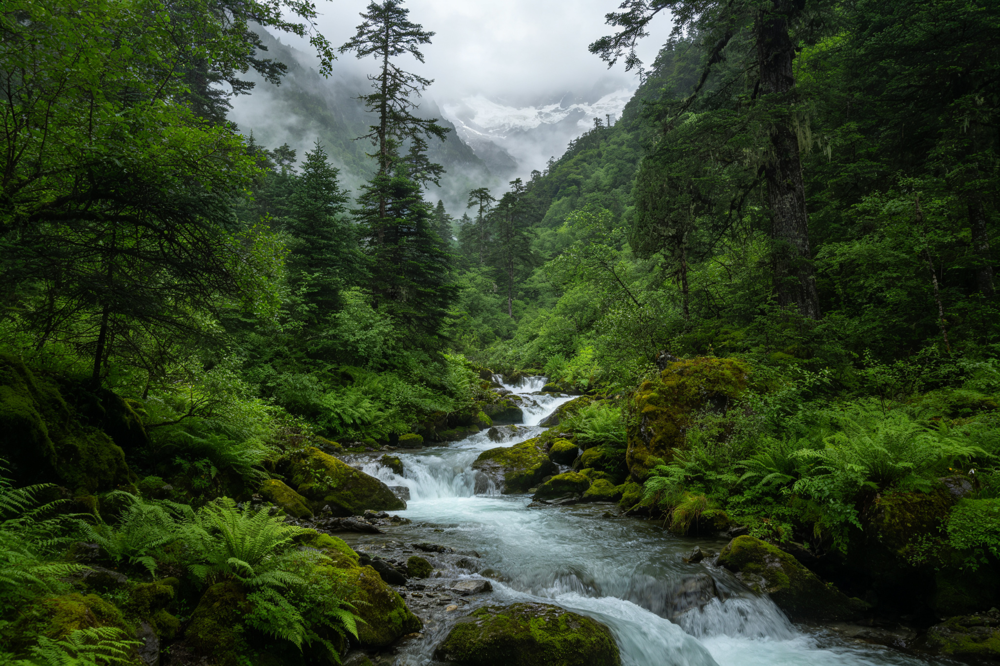
夏雨季是满眼浓绿的避暑季，市区均温仅 15–20℃，纳帕海涨成碧蓝湖泊、一半湖水一半草原，松茸上市、菌子满山。但梅里主峰常被云雾封锁，日照金山可遇不可求；雨崩道路湿滑、尼农线有落石塌方与蚂蟥，又逢暑期人流高峰，是最不推荐专程看雪山的季节。
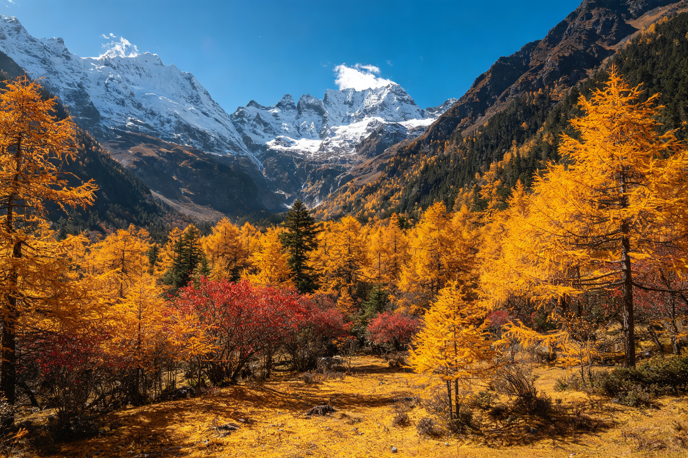
秋9 月中下旬雨季收尾，纳帕海畔狼毒花转红；10 月中旬起雨崩的落叶松整片金黄，雨季结束、天高云淡，10 月是日照金山成功率最高的月份，纳帕海草原铺金，11 月后黑颈鹤等候鸟陆续抵达。天气稳定、徒步干爽、彩林与雪山同框，是公认的黄金窗口，唯一缺点是国庆人潮与涨价。
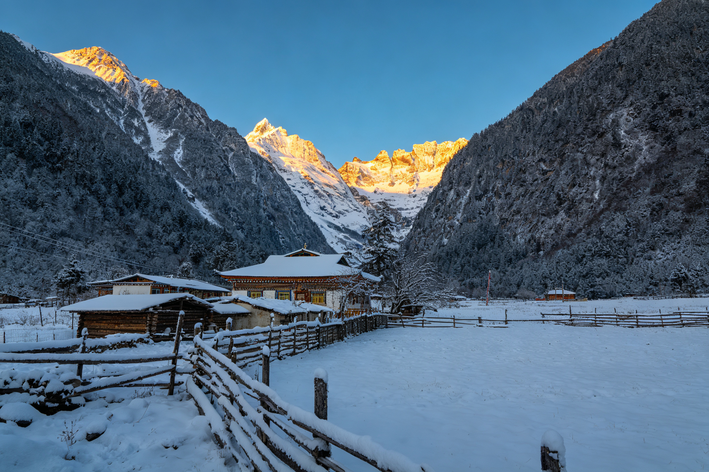
冬一场雪后雨崩银装素裹，被称作「不输阿勒泰的冬天」；旱季晴天极多，日照金山概率可达九成，推开窗就是金光照雪峰，游客稀少、客栈便宜。但气温低至零下十几度，冰湖、神瀑步道结冰需冰爪，部分路段可能封闭，昼短夜长，徒步务必请向导、备齐防寒装备。
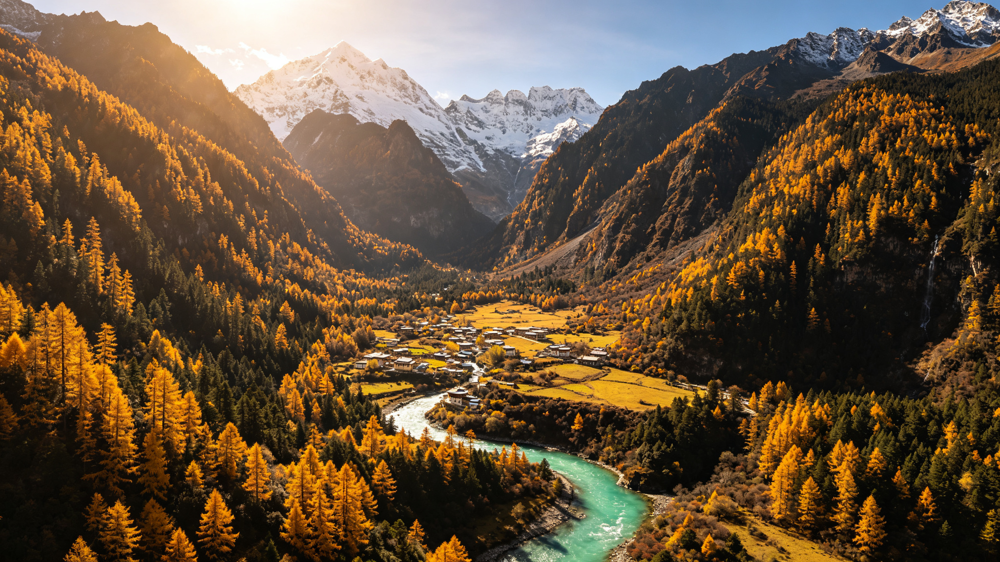
雨季彻底结束、彩林进入巅峰、日照金山成功率登顶，且避开了国庆人潮——天气、色彩、雪山与徒步体感在这一个月里同时达到全年最好。
高原行程，准备充分比什么都重要。以下票价与政策整理自公开攻略，均为参考价，出行前请通过各景区官方渠道核对当年公告。
提示：独克宗古城、纳帕海环湖免费（私人牧场会收费，勿信路边「免费带你看湖」）。雨崩进村通道与越野车价格可能随道路施工调整，出发前务必查最新攻略与景区通告；飞来寺观景台、松赞林寺等通常另收观光车费。